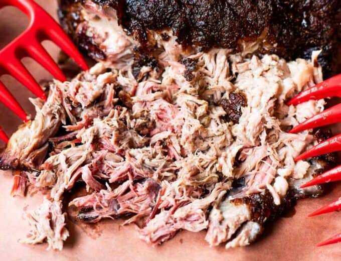

Pulled Pork Recipe

Description
Texas Smoked Pulled Pork. This simple, smoked Pork Shoulder/Butt creates the most tender, flavorful pulled pork.
Cooked low and slow, this pork is melt in your mouth good!
One of the basics when it comes to BBQ is a good pulled pork. This simply seasoned pork is smoked over a blend
of hickory wood. The end result is a classic Texas BBQ version of pulled pork! The best part? This is a super
simple recipe, and while there’s lots of information included, this is a great starter recipe to get used to
smoking in your own backyard.
Ingredients
- 6 pound pork butt
- 1/4 cup yellow mustard
- 1 tbsp coarse salt
- 1 tbsp coarse ground pepper
- 1 tsp garlic powder
- 1 tsp paprika
Instructions
- Preheat grill or smoker according to directions to 225℉.
- Trim the pork shoulder. Removing portions of the fat cap, so that it is only approximately 1/4 of an
inch
thick. Then score the fat, cutting a grid pattern into the fat cap, cutting just enough to get through
the
fat to the meat.
- Slather the entire pork shoulder with mustard, as a binder.
- In a small bowl combine the ingredients for the rub: salt, pepper, garlic powder, and paprika. Stir
together.
- Evenly sprinkle the rub over the entire pork shoulder. Press the rub into the mustard before turning the
pork over to sprinkle the other side.
- Place the pork in the center of the smoker or the grill on the grate. Insert probe to monitor the
temperature.
- In a spray bottle combine the apple cider vinegar and water. Shake to combine.
- Smoke for 2 hours before opening smoker. At this point open and spritz the pork, continue spritzing the
pork
every hour until the pork reaches an internal temperature of 160℉. This helps with the creation of the
smoke
ring and keeps humidity in the smoker.
- Once the pork reaches an internal temperature of 160℉ wrap using foil or peach paper. Place back in
smoker
to continue cooking.
- Cook until pork reaches an internal temperature of 195-205℉. Depending on the texture of pork you prefer
will determine when you will want to pull off. At 195 pork is more moist but less tender, more string.
At
205 pork is more tender, more chunky than stringy, but less moist. Any temperature in this range will
yield
great pulled pork!
- Once internal temperature is reached, pull from the smoker, make sure the pork is wrapped nice and
tight.
Let rest for 1-2 hours before shredding. Store in a clean empty cooler, or in a turned off oven.
Recipe courtesy of https://houseofyumm.com